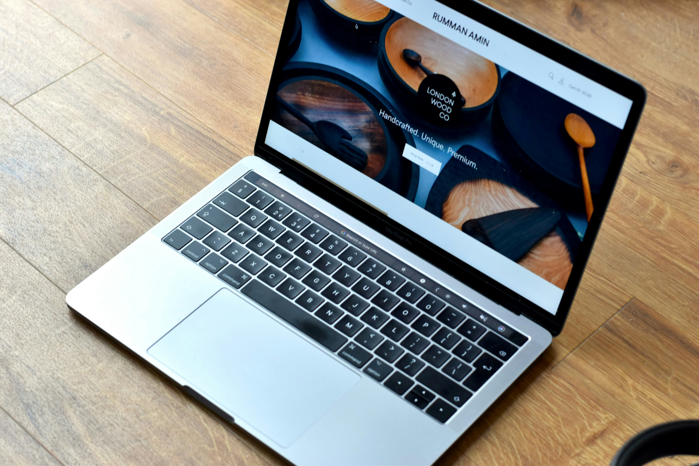

Website Design
In today's digital landscape, a guest's opinion of a restaurant begins long before they walk through the door. The website is often the very first interaction a potential guest has with your establishment, and it sets expectations for everything that follows. A beautifully designed, intuitive website signals the same attention to detail that guests will find in the dining room, while a cluttered or outdated one can raise doubts before a reservation is even made.
What Defines a Great Website?
For high-end restaurants, the website must reflect the same level of sophistication as the experience itself. Stunning photography, elegant typography, and a seamless user experience tell guests that the restaurant values quality in every touchpoint. A site that is difficult to navigate, slow to load, or poorly designed on mobile sends the opposite message, suggesting a lack of care that guests will assume carries over into the kitchen and the service floor.
Beyond aesthetics, functionality plays a key role in shaping guest perception. Easy access to menus, a smooth reservation process, and clear contact information all contribute to a sense of professionalism and hospitality. When a website feels effortless and refined, guests arrive already confident in their choice, primed for a memorable experience. In the world of fine dining, every detail counts, and your website is no exception.